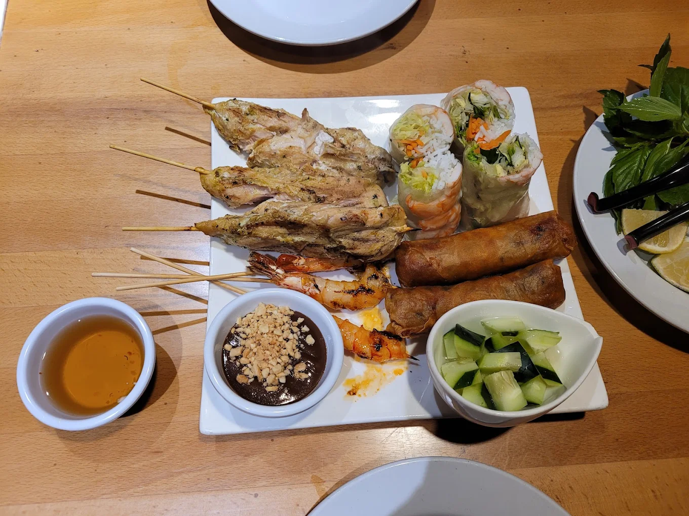
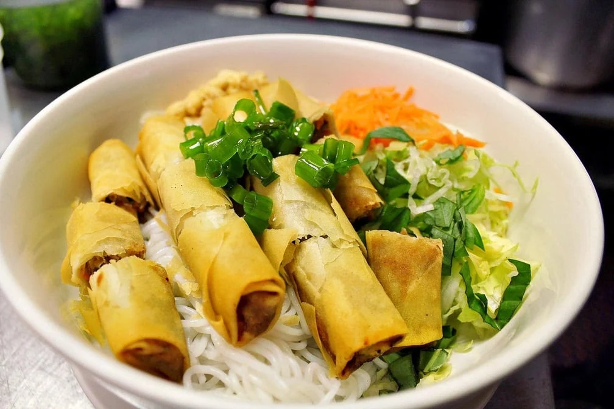
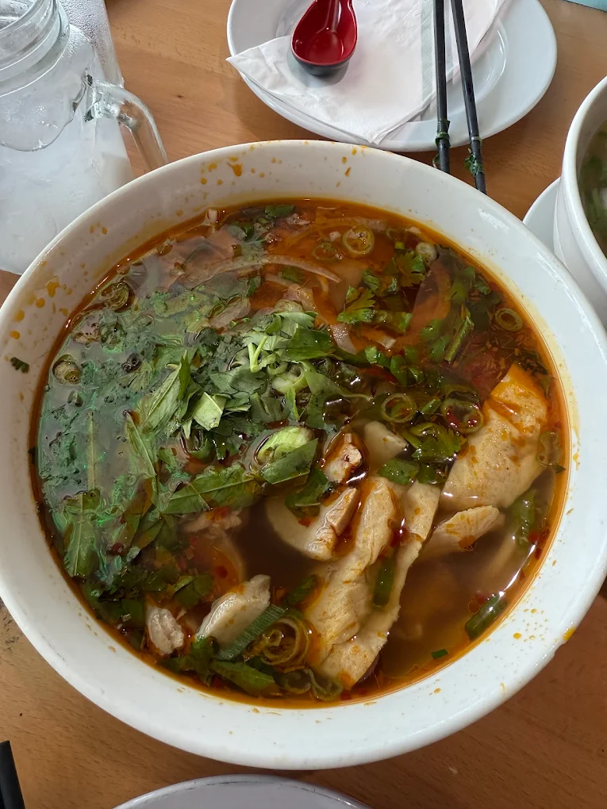
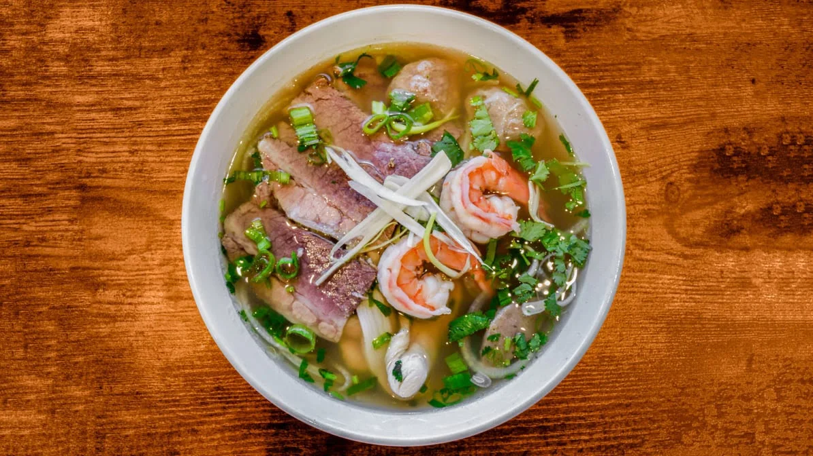
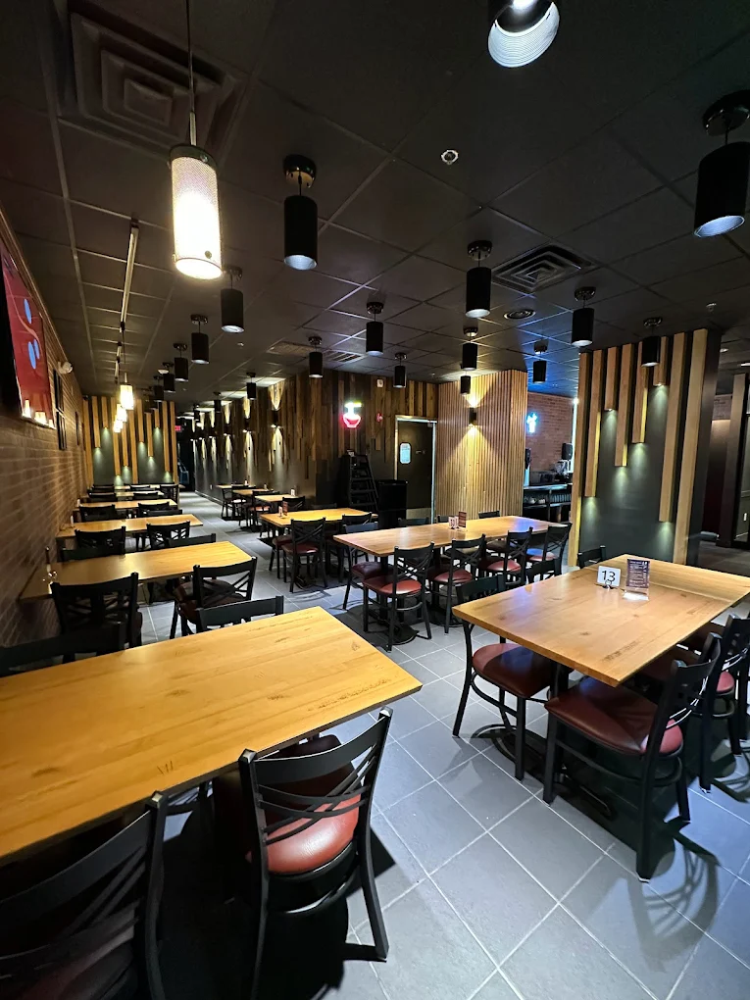
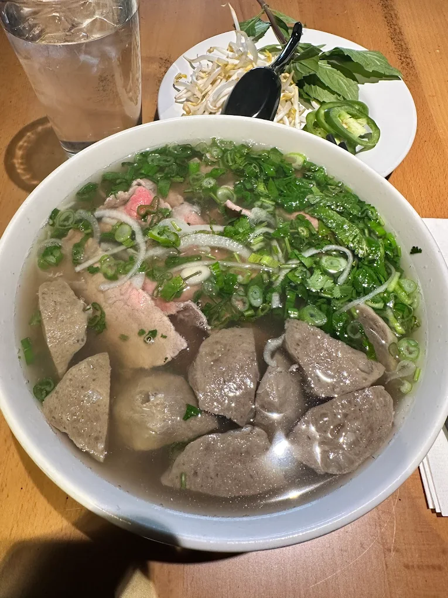
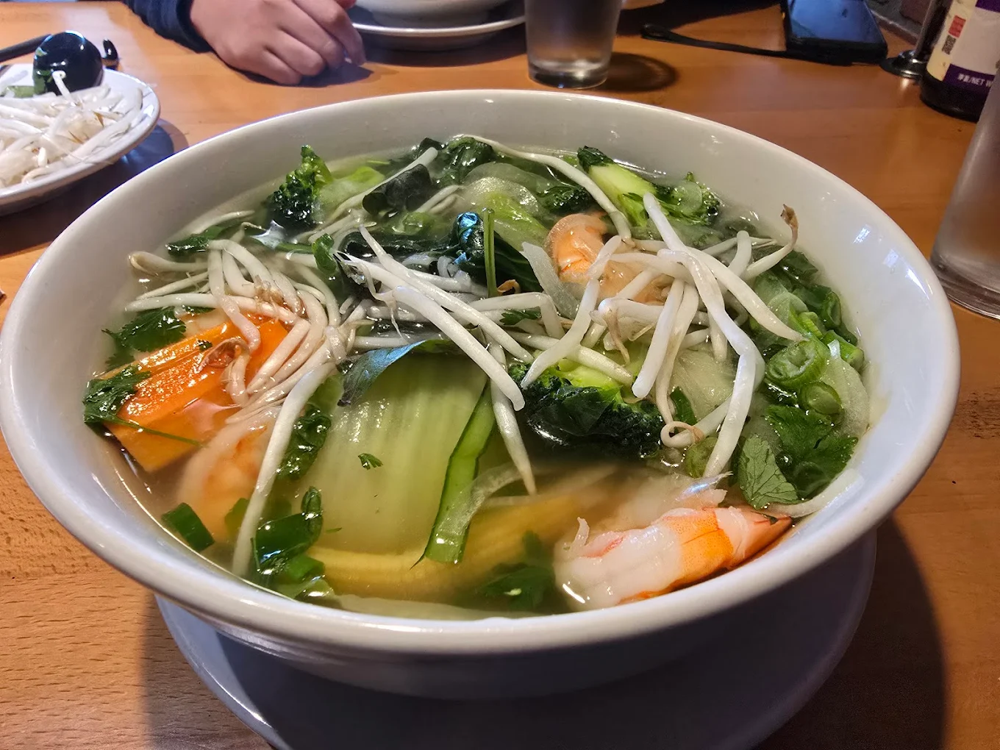
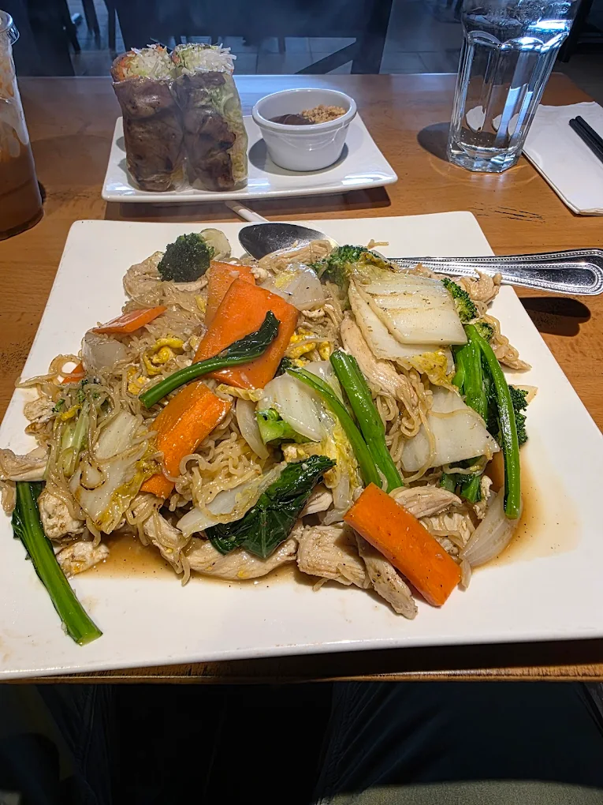

A Visual Journey
Vietnamese Restaurant Photos - Pho Ngon Norristown
Explore our authentic Vietnamese dishes and inviting restaurant atmosphere at 87 E Germantown Pike, Norristown PA - near Plymouth Meeting Mall and Our Town Alley.







